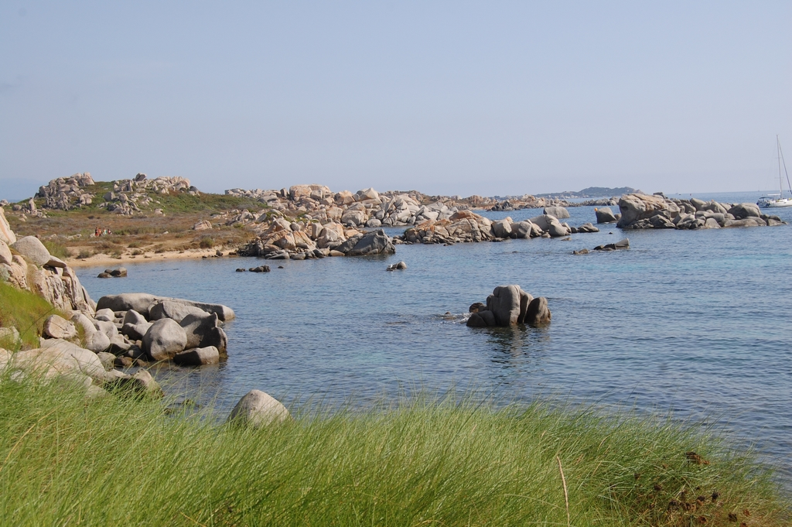
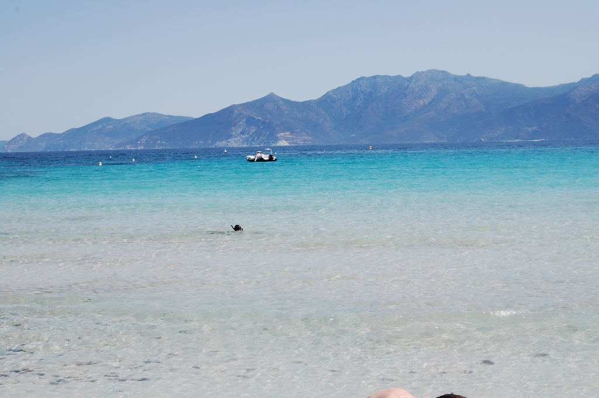
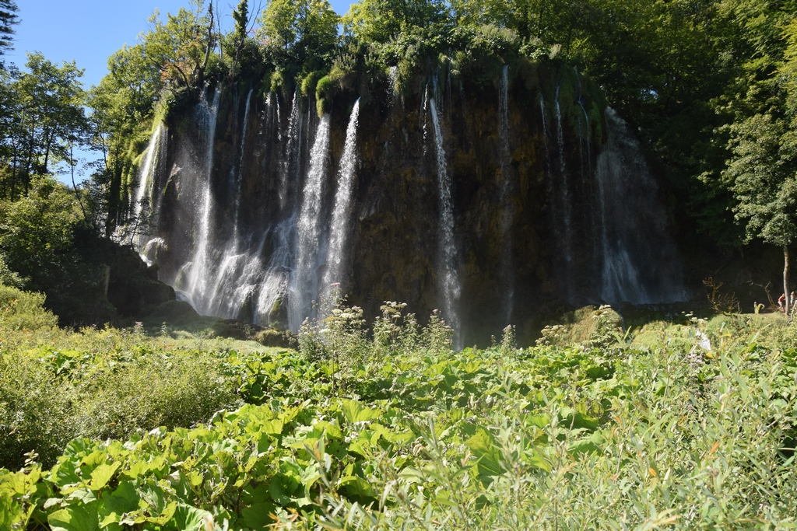
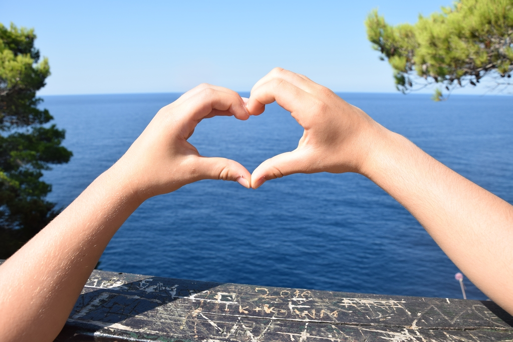
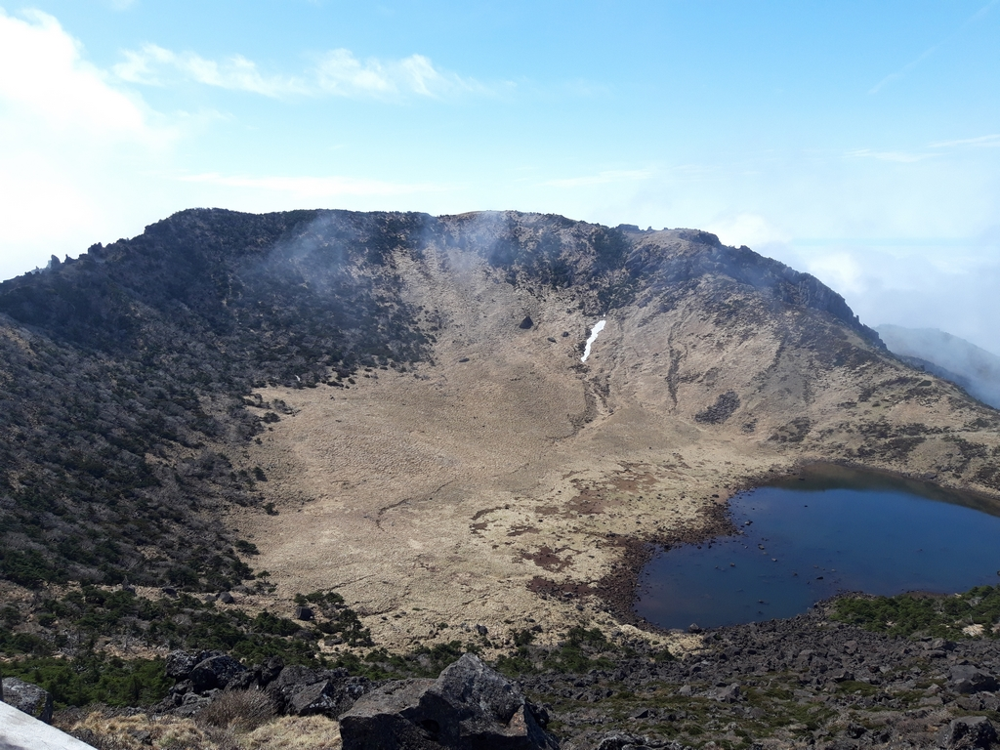

left
left
left
Carnets de voyages
Corse du sud

Ex turba vero imae sortis et paupertinae in tabernis aliqui pernoctant vinariis, non nulli velariis umbraculorum theatralium latent, quae Campanam imitatus lasciviam Catulus in aedilitate sua suspendit omnium primus; aut pugnaciter aleis certant turpi sono fragosis naribus introrsum reducto spiritu concrepantes; aut quod est studiorum omnium maximum ab ortu lucis ad vesperam sole fatiscunt vel pluviis, per minutias aurigarum equorumque praecipua vel delicta scrutantes.

Restabat ut Caesar post haec properaret accitus et abstergendae causa suspicionis sororem suam, eius uxorem, Constantius ad se tandem desideratam venire multis fictisque blanditiis hortabatur. quae licet ambigeret metuens saepe cruentum, spe tamen quod eum lenire poterit ut germanum profecta, cum Bithyniam introisset, in statione quae Caenos Gallicanos appellatur, absumpta est vi febrium repentina. cuius post obitum maritus contemplans cecidisse fiduciam qua se fultum existimabat, anxia cogitatione, quid moliretur haerebat. Croatie
Parc national des lacs de Plitvice
Quam ob rem circumspecta cautela observatum est deinceps et cum edita montium petere coeperint grassatores, loci iniquitati milites cedunt. ubi autem in planitie potuerint reperiri, quod contingit adsidue, nec exsertare lacertos nec crispare permissi tela, quae vehunt bina vel terna, pecudum ritu inertium trucidantur.

Martinus agens illas provincias pro praefectis aerumnas innocentium graviter gemens saepeque obsecrans, ut ab omni culpa inmunibus parceretur, cum non inpetraret, minabatur se discessurum: ut saltem id metuens perquisitor malivolus tandem desineret quieti coalitos homines in aperta pericula proiectare. Ideoque fertur neminem aliquando ob haec vel similia poenae addictum oblato de more elogio revocari iussisse, quod inexorabiles quoque principes factitarunt. et exitiale hoc vitium, quod in aliis non numquam intepescit, in illo aetatis progressu effervescebat, obstinatum eius propositum accendente adulatorum cohorte.
Parc National de KORNATI

Iam virtutem ex consuetudine vitae sermonisque nostri interpretemur nec eam, ut quidam docti, verborum magnificentia metiamur virosque bonos eos, qui habentur, numeremus, Paulos, Catones, Galos, Scipiones, Philos; his communis vita contenta est; eos autem omittamus, qui omnino nusquam reperiuntur. Corée du Sud
Road trip en sac à dos avec ma fille, autours de la Corée du sud du 27 mars au 09 avril 2024. Ce séjour commence par 5 jours dans la capitale coréenne. Nous avons ensuite pris le train pour Gyeongju puis Busan. De là, on décolle pour l'Ile de Jeju et on revient 2 jours plus tard pour visiter la région de Suncheon. Retour à Séoul et fin du voyage où je retourne en France et ma fille à Taïwan...Séoul

Et hanc quidem praeter oppida multa duae civitates exornant Seleucia opus Seleuci regis, et Claudiopolis quam deduxit coloniam Claudius Caesar. Isaura enim antehac nimium potens, olim subversa ut rebellatrix interneciva aegre vestigia claritudinis pristinae monstrat admodum pauca. Dein Syria per speciosam interpatet diffusa planitiem. hanc nobilitat Antiochia, mundo cognita civitas, cui non certaverit alia advecticiis ita adfluere copiis et internis, et Laodicia et Apamia itidemque Seleucia iam inde a primis auspiciis florentissimae.
Ile de Jeju

Quam ob rem cave Catoni anteponas ne istum quidem ipsum, quem Apollo, ut ais, sapientissimum iudicavit; huius enim facta, illius dicta laudantur. De me autem, ut iam cum utroque vestrum loquar, sic habetote. Batnae municipium in Anthemusia conditum Macedonum manu priscorum ab Euphrate flumine brevi spatio disparatur, refertum mercatoribus opulentis, ubi annua sollemnitate prope Septembris initium mensis ad nundinas magna promiscuae fortunae convenit multitudo ad commercanda quae Indi mittunt et Seres aliaque plurima vehi terra marique consueta.
Iam virtutem ex consuetudine vitae sermonisque nostri interpretemur nec eam, ut quidam docti, verborum magnificentia metiamur virosque bonos eos, qui habentur, numeremus, Paulos, Catones, Galos, Scipiones, Philos; his communis vita contenta est; eos autem omittamus, qui omnino nusquam reperiuntur.
right